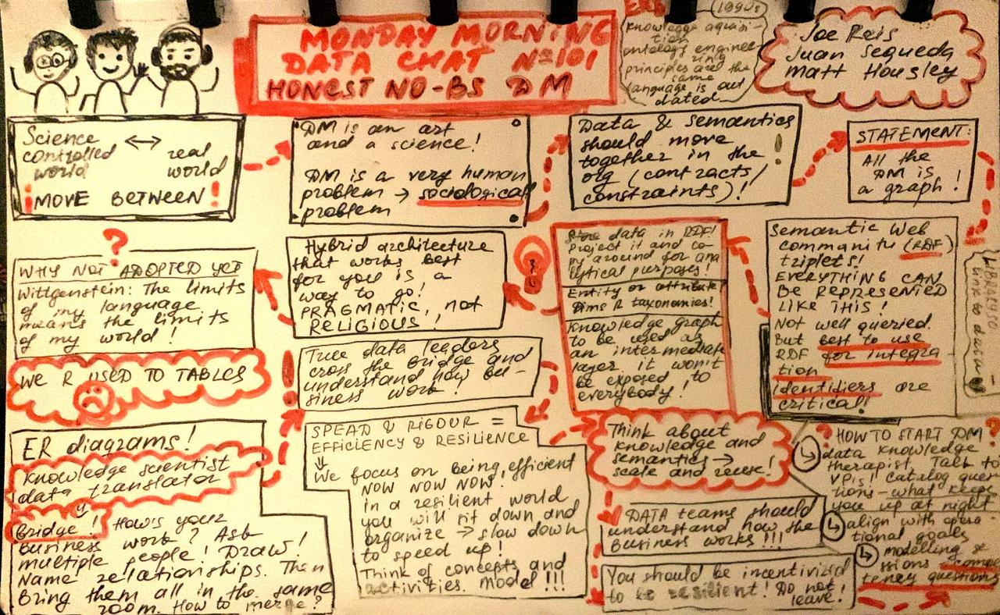

Notes from Monday Morning Data Chat
2022
101 - Honest No-BS Data Modeling w/ Juan Sequeda
Recommended resources:
- Data Modeling Made Simple - Steve Hoberman
- Designing and building enterprise knowledge graphs - Juan Sequeda and Ora Lassila
- Language features for interoperability of databases with schematic discrepancies - Ravi Krishnamurthy, Witold Litwin, William Kent
- Semantic Web for the Working Ontologist: Effective Modeling in RDFS and OWL 2nd Edition - Dean Allemang, James Hendler
My notes:
